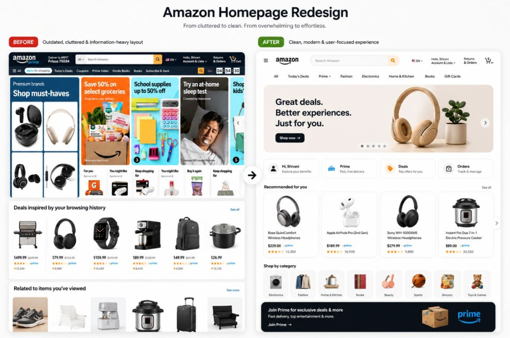

Amazon homepage redesign: built around why people come back
An independent redesign of the Amazon desktop homepage for returning customers. I audited the current page, used Claude to speed up research planning and synthesis, mapped everything against the Laws of UX and WCAG 2.2, and redesigned it in Figma so the most common jobs (track an order, reorder, pick up where you left off) come first.
A homepage that tries to serve everyone at once
The current homepage leads with a rotating promo banner, a grid of promo cards and many carousels. That works for browsing and for promotions. But returning customers often arrive with a specific job in mind: check on an order, buy something again, or find the item they looked at yesterday. Those jobs are spread across the account menu and lower parts of the page.
Design question: How might we keep the homepage's discovery value while putting returning customers' most common jobs on the first screen?
Independent concept, not affiliated with Amazon. My audit is based on the desktop homepage as I saw it while signed in. Wireframes are simplified grey boxes with no Amazon logo or real content. The research below is a plan; I'll add findings as I run it.
Six steps, from audit to validation plan
Audit
Full-page screenshots on desktop, a heuristic review against Nielsen's 10 heuristics, and review mining of public comments with Claude's help.
Jobs to be done
Listed why a returning customer opens the homepage: track, reorder, resume, find a deal, browse. Ranked them by how often I'd expect each to happen, to be confirmed in research.
Map to UX laws
Checked each module against the Laws of UX and WCAG 2.2 to turn opinions into named, testable problems.
IA & wireframes
Re-ordered modules in FigJam, then wireframed in Figma with auto layout and one shared product-card component.
Visual design
Calmer grid, one accent color, consistent spacing tokens, and a clear type scale.
Validation plan
5-second test, first-click test and task-based tests, comparing the current page with the redesign.
Using Claude in the user research
I use Claude as a research assistant for the slow, text-heavy parts of the study: planning, sorting and summarizing. It never stands in for real shoppers. Every theme it suggests is checked against the source text before it goes into the case study.
Research plan & screener
Drafts the interview guide, a screener for returning Amazon shoppers, and the first-click and task-test scripts. I edit the wording so no question leads people to an answer.
Review mining
Groups public app-store and forum comments about the homepage into themes such as “too many ads”, “can't find my orders” and “too busy”. I read the original comments behind each theme.
Audit checklist
Turns Nielsen's 10 heuristics, the Laws of UX and WCAG 2.2 into one checklist I can apply module by module to both designs.
Synthesis
After sessions, it sorts my typed notes into an affinity map draft. I move, merge and rename the groups, and each final insight links back to real notes.
Only public or anonymized text goes in, never names or order details. Claude doesn't count as a participant, so no “synthetic users”. Counts and quotes are checked by hand. Final insights, priorities and design decisions are mine.
Every law, and whether it applies here
The Laws of UX are research-backed rules of thumb about how people perceive and decide. I went through all of them and sorted each by how much it matters for a shopping homepage. The third group explains why some popular laws don't really apply to this page.
Applies strongly 8
| Law | What it says | In this redesign |
|---|---|---|
| Hick's law | The more choices, the longer it takes to decide. | Category strip cut from 13 links to 8 clear ones; everything else sits under “All”. |
| Fitts's law | Bigger, closer targets are faster to hit. | Search becomes the largest control at the top; add-to-cart buttons are full-size tap targets. |
| Jakob's law | People expect your site to work like the sites they already use. | Kept familiar patterns: search on top, cart top right, “Buy again” like other shopping apps. |
| Aesthetic-usability effect | People see attractive designs as easier to use. | A calmer, consistent card system makes the page feel easier, which matters on a page this dense. |
| Law of common region | Things inside the same boundary feel like a group. | Returning-customer tasks share one row of matching cards. |
| Law of similarity | Things that look alike are seen as related. | One product-card style across rows, instead of a different style per carousel. |
| Von Restorff effect | The one item that's different is the one remembered. | A single highlighted deal, with the only accent border on the page. |
| Goal-gradient effect | People speed up as they get closer to a goal. | Order tracker shows delivery progress in steps. |
Applies 8
| Law | What it says | In this redesign |
|---|---|---|
| Miller's law | People hold about seven (plus or minus two) items in working memory. | Navigation and category shortcuts kept to eight items each, within 7 ± 2. |
| Chunking | Grouping information makes it easier to process. | The page is split into a few clear modules instead of a long scroll of carousels. |
| Law of proximity | Things near each other look related. | Spacing between modules is larger than spacing inside them. |
| Zeigarnik effect | People remember unfinished tasks. | “Pick up where you left off” brings back recently viewed items. |
| Tesler's law | Some complexity can't be removed, only moved. | Search covers products and orders, so people don't have to know where to look. |
| Serial position effect | People remember the first and last items best. | Most important tasks first; category shortcuts and recommendations last. |
| Doherty threshold | Responses under about 400 ms keep people engaged. | Skeleton loading for each module, so the page feels instant. |
| Cognitive load | Every element costs mental effort. | Removed the rotating banner and duplicate promo images from the first screen. |
Less relevant here 6
| Law | What it says | In this redesign |
|---|---|---|
| Peak-end rule | Experiences are judged by their peak and their end. | Matters more for checkout and delivery than for the homepage. |
| Parkinson's law | Tasks expand to fill the time available. | More useful for checkout and forms. |
| Postel's law | Be liberal in what you accept, conservative in what you send. | Applies to search input tolerance, outside this homepage scope. |
| Pareto principle | About 80% of effects come from 20% of causes. | A useful lens for prioritizing, but needs real analytics to apply honestly. |
| Occam's razor | Prefer the simplest solution that works. | A general principle behind the whole redesign, not one specific change. |
| Flow | Full focus when challenge matches skill. | More relevant to apps used for long tasks. |
Same content, different priorities
The first frame is a simplified trace of the current homepage; the second is the redesign. Click any layer to see which law or guideline it relates to.
Plano 75024 Hello, sign in
Account & Lists ▾Returns
& OrdersCart
Frame
Frame
Auto layout⋮⋮
Auto layout⋮⋮
Search❖
Text style
Auto layout⋮⋮
Order tracker❖
Product row❖
Product row❖
Deal card❖
Category shortcuts❖
Product row❖
From cluttered to calm
The final visual design, side by side with the current homepage. The pins mark the decisions on the redesign; each one maps to a law above.

1234567- Search in the center of the header, with fewer controls around it. Fitts's law.
- Eight navigation links instead of a long strip. Hick's and Miller's laws.
- One hero, controlled by the shopper. Arrows and dots, no auto-play (WCAG 2.2.2). Von Restorff: the only big visual.
- Quick links for returning shoppers: account, Prime, deals and orders. Jakob's law and Zeigarnik effect.
- One product-card style with image, name, price and rating in the same place. Law of similarity.
- Eight category icons as clear entry points. Chunking.
- Prime offer at the end, where it doesn't compete with shopping tasks. Serial position effect.
The separate “Deal of the day” card and order tracker were folded into the Deals and Orders quick links to keep the first screen calm. The checks below rate this hi-fi version honestly, including what still needs work.
Both designs, checked the same way
Each check uses a named standard or law, so it can be repeated by anyone. “Verify” means it needs a measurement tool (contrast checker, DevTools, Lighthouse) before I mark it pass or fail. I don't guess those.
| Check | Current homepage | Redesign |
|---|---|---|
| Main task is obvious on the first screenFitts's law · 5-second test | FailSearch shares weight with many other controls; promo tiles dominate | PartialSearch and quick links are clear, but the hero still takes the most space. Next iteration: a shorter hero. |
| Number of top-level choicesHick's law · Miller's law | Fail13 links in the category strip | Pass8 items, with the rest under “All” |
| Auto-moving content can be pausedWCAG 2.2 · 2.2.2 Pause, Stop, Hide | VerifyRotating banner: confirm a visible pause control exists | VerifyHero has dots and arrows. Spec: no auto-play, or add a pause button |
| Tap targets large enoughWCAG 2.2 · 2.5.8 Target Size (24×24 px min) | VerifySmall text links in the category strip; measure in DevTools | PassQuick-link tiles and category icons well above 24 px |
| Text contrastWCAG 2.2 · 1.4.3 Contrast (4.5:1) | VerifyGrey “Sponsored” labels; measure with a contrast checker | VerifyLight grey helper text under quick links; measure before handoff |
| Ads clearly distinguishableTrust · FTC native-ad guidance | PartialLabeled, but small and easy to miss | VerifyNo sponsored items in the mockup yet; define the label in the card component |
| Consistent card patternsLaw of similarity | FailDifferent card and tile styles in every module | PassOne product-card style for recommendations |
| Returning-customer jobs visibleJakob's law · Zeigarnik effect | FailOrders and reorders live under Account & Orders | PassAccount, Prime, Deals and Orders shortcuts right under the hero |
| One clear highlightVon Restorff effect | FailMany promos compete equally | PassOne hero leads; everything else is calm and uniform |
| Fast perceived loadDoherty threshold (≈400 ms) | VerifyMeasure with Lighthouse / WebPageTest | VerifySkeletons designed; measure once built |
Looks affect how usable a page feels
The aesthetic-usability effect says people see attractive designs as easier to use, and they're more patient with small problems. On a page as dense as a shopping homepage, a calmer layout makes the same amount of content feel manageable.
It has a catch: in testing, people may praise a good-looking design and miss real problems. So I test tasks ("find your order", "reorder coffee pods"), not opinions.
- One accent color, used only for the deal and the main button, so it keeps meaning.
- One product-card style across rows, so the eye learns the pattern once.
- More space between modules than inside them, so groups are obvious (proximity).
- A short type scale: one size for module titles, one for product names, one for prices.
- No auto-rotating banner on the first screen, which removes motion competing for attention.
How I'd prove it
Before calling the redesign better, I'd test it against the current page with the same participants and tasks.
- 5-second test: “What can you do on this page?”
- First-click test: “Where would you go to check your order?”
- Task test: reorder an item, resume a viewed item, find today's deal. Measure time and success.
- If it shipped: A/B test time to first meaningful click, reorder rate and search use.